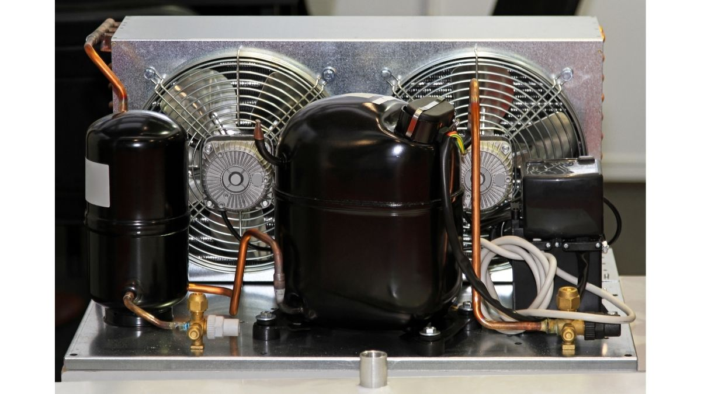

7 de septiembre

Coca-Cola Cambia su sistema de refrigeracion en Costa Rica
La sede de Coca-Cola Liberia, ubicada en la provincia de Guanacaste, instaló un sistema de refrigeración de amoniaco de expansión directa y baja carga, un proyecto en el que participó el contratista: Refrigeración y Soluciones de Frío (RSF).
El proyecto requería poner en marcha todo el sistema de refrigeración de la planta que incluía el aire acondicionado, la refrigeración del agua de proceso y la climatización de las cámaras de almacenamiento refrigerado y cámara congelado.
Noticia completa Aqui
4 de septiembre

Novedoso Invento chino Para Reducir Consumo
El proyecto ha conseguido suministrar aire fresco a los edificios públicos del moderno distrito de Qianhai en Shenzhen. Esto supone un área de varios kilómetros cuadrados y el ahorro de millones en energía. ¿Cómo funciona?
Noticia Completa AquiRefrigeracion En la Antiguedad
¿Como era la refrigeracion en el Imperio Persa?
La ciudad de Yazd, en el caluroso desierto de Irán, alberga antiguas maravillas de la ingeniería que incluyen una estructura de refrigeración subterránea llamadayakhchal, un sistema de riego subterráneo llamado qanat; e incluso una red de mensajería llamada pirradazisque que tiene 2.000 años más que el servicio postal estadounidense. Entre estas antiguas tecnologías se encuentran también los badgi, también llamados "captadores de viento" o "atrapavientos".
Noticia Completa Aqui
Mercado global de compresores de refrigeración crecería 4.8% anual hasta 2027
¿Porque se da este fenomeno a corto y mediano plazo?
El tamaño del mercado de compresores de refrigeración superó los US$61.8 mil millones en 2020 y exhibirá una tasa compuesta anual del 4.8% de 2021 a 2027. Se estima que los envíos de la industria superarán las 536.3 millones de unidades para 2027, señaló el analista Global Markets Insights. La rápida urbanización y el aumento de las actividades de construcción en los países emergentes junto con una creciente demanda de aparatos de aire acondicionado y refrigeración escalará el crecimiento de la industria
Noticia Completa Aqui